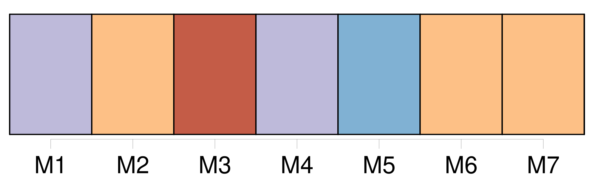
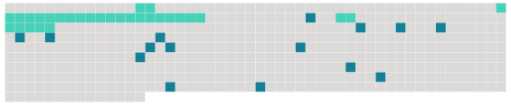

Longueur nb maillons : 19 mentions |
 |
Membre du bureau politique du Front National, conseiller régional d'Ile-de-France, [Farid Smahi] était hier à Belfort pour rencontrer les responsables locaux du Front, en l'occurrence Marie-Thérèse Munnier, secrétaire départementale du FN et Yolande Pflieger, trésorière, ainsi que les militants belfortains. [Celui qu'on a souvent qualifié d'« alibi », de « faire valoir » ou de « prétexte »] cristallise en effet les paradoxes.
A l'instar de [son] président, [Farid Smahi] , manie la provocation avec une aisance frondeuse, presque cynique. La présence de [ce fils d'immigrés algériens] au sein du FN interpelle, a fait couler autant d'encre que de salive jusqu'à susciter des actions en justice et une publicité qui n'est pas pour [lui] déplaire.
« [J'] ai gagné tous [mes] procès contre la presse de gauche et [j'] ai pu [m'] offrir une Mercédès décapotable » [1 phrases] [J'] aime [mon] Algérie comme Pasqua aime sa Corse et Giscard son Auvergne. Mais [je] suis Français d'abord et avant tout et fier de l'être. [1 phrases]
[Je] pense à contrario qu'elle se mérite ou qu'elle s'hérite » [4 phrases] Les autres, [j'] ai envie de leur dire : « si vous n'aimez pas la France, alors quittez -la ». [1 phrases] [Ma] présence au sein du parti de Jean-Marie Le Pen n'a rien de paradoxal, même si elle n'a pas toujours été facile à vivre.
Mais [je] suis fier d'être au Front parce que [je] suis fier d'être Français » |
 |
Il est possible de télécharger la ressource sur la page Ortolang |
Si vous avez des questions ou vous voyez des erreurs, merci d'envoyer un mail à silvia.federzoni89@gmail.com |